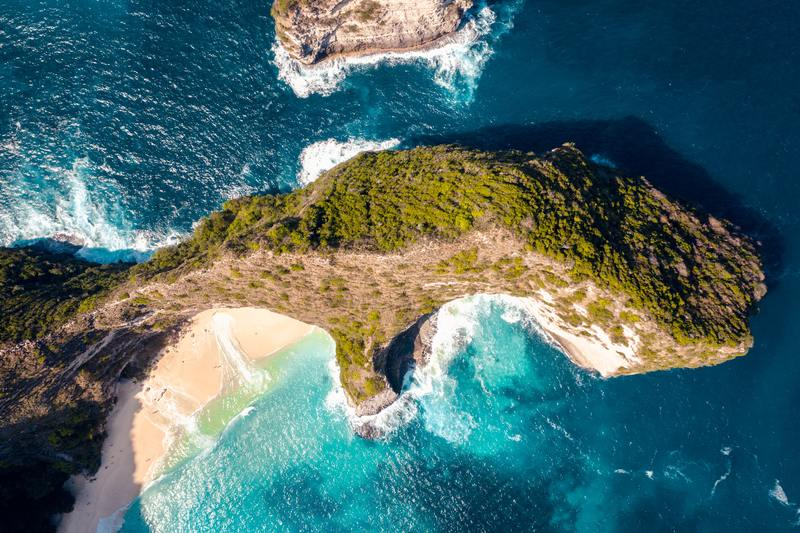

5 Hal yang Harus Diperhatikan Jika Ingin ke Crystal Bay Nusa Penida
Pulau Bali identik dengan berbagai pilihan pantainya yang indah. Buat yang sering pergi ke Bali maupun yang tidak, pasti kamu lebih sering mendengar Pantai Nusa Dua, Pantai Jimbaran dan Pantai Kuta sebagai destinasi wisata pantai di Bali. Nah, kalau Crystal Bay Nusa Penida sudah pernah dengar belum? Pantai yang satu ini nggak kalah indah dibandingkan dengan pantai lainnya di Bali, lho.
Berlokasi di teluk Penida, pantai ini berjarak sekitar 15 km dari pelabuhan Nusa Penida. Pantai ini terkenal dengan air laut yang sangat bersih dan jernih. Saking jernihnya, pantai ini diberi nama Crystal Bay karena menawarkan air laut sebening kristal. Kamu bisa melihat dengan jelas biota apa saja yang ada di dalamnya. Menarik banget bukan? Kalau kamu berencana pergi ke Crystal Bay Nusa Penida, wajib tau nih aktivitas apa saja yang bisa kamu lakukan di sana.
Berenang atau bermain air merupakan aktivitas yang tidak terlewatkan ketika mengunjungi pantai. Ketika mengunjungi Crystal Bay Nusa Penida, kamu juga tidak perlu khawatir saat bermain air, karena ombak laut di pantai ini tidak besar. Sambil bermain air, kamu akan disuguhkan oleh pemandangan pulau kecil yang indah di sekitar pantai Crystal Bay. Selain itu, kamu juga dapat melihat pasir putih yang membentang dari ujung ke ujung.
2. Snorkling dan DivingDikenal dengan air lautnya yang jernih, kedua aktivitas air ini sayang banget kalau kamu lewatkan. Snorkling dan diving merupakan pilihan aktivitas yang pas kalau kamu ingin melihat keindahan bawah laut Pantai Crystal Bay Nusa Penida. Uniknya, kamu bisa melihat ikan mola-mola yang hidup di beberapa spot pantai ini. Pemandangan laut terlihat indah karena terumbu karang yang masih terawat dan ratusan ikan kecil cantik akan menyambut kamu.
3. Menikmati Pilihan Kuliner Sekitar PantaiKalau perut terasa lapar sehabis bermain air seharian di pantai, kamu nggak akan kebingungan mencari makanan di pantai ini. Terdapat banyak pilihan makanan mulai dari warung, jajanan pinggir pantai sampai restoran. Untuk pilihan makanannya juga beragam, dari makanan lokal sampai makanan western pun juga ada. Kalau makan di dalam warung atau restoran terlalu biasa, kamu bisa menyantap makanan di kursi berjemur yang sudah disediakan.
4. Bersantai sambil Menunggu SunsetPantai sebening kristal dilengkapi dengan pemandangan sunset yang indah tentu akan terasa lengkap. Pantai Crystal Bay Nusa Penida merupakan salah satu pilihan pantai buat kamu yang suka menikmati senja. Tersedia bean bag dan beberapa kursi berjemur yang dapat kamu gunakan untuk bersantai sambil menunggu sunset tiba. Jangan lupa, ambil kameramu dan abadikan moment tersebut ya!
Hal yang Harus Kamu Perhatikan Sebelum Pergi ke Crystal Bay Nusa PenidaMengetahui keindahan Pantai Crystal Bay Nusa Penida tentunya membuat banyak orang tidak sabar untuk melihat secara langsung. Pantai ini merupakan pilihan ideal kalau kamu mencari destinasi wisata pantai atau laut yang masih alami. Untuk liburanmu yang seru, ada beberapa hal yang harus kamu perhatikan sebelum pergi ke Crystal Bay Nusa Penida nih, RedTraveler. Salah satunya adalah protokol aturan pariwisata di tengah pandemi yang harus kamu taati.
1. Wajib menunjukkan surat hasil rapid/swab testKesehatan adalah hal utama yang harus kamu perhatikan ketika ingin berwisata di tengah pandemi. Jangan sampai, aktivitas wisata yang kamu lakukan malah merugikan orang lain. Untuk menghindari hal tersebut, Pemerintah Provinsi Bali menerapkan aturan protokol kesehatan bagi Pelaku Perjalanan Dalam Negeri (PPDN). Surat keterangan hasil negatif uji rapid atau swab test wajib ditunjukkan sebelum keberangkatan untuk wisatawan yang melakukan perjalanan dengan transportasi udara maupun dengan kendaraan pribadi.
2. Menggunakan Fast Boat sebagai alat transportasi menuju Crystal Bay Nusa PenidaPantai Crystal Bay Nusa Penida terletak di gugusan kepulauan kecil selatan Pulau Bali. Jika kamu berangkat dari Bali, disarankan menggunakan fast boat untuk menuju ke sana. Fast boat atau kapal cepat ini merupakan pilihan yang pas karena memiliki kecepatan yang cepat, sehingga waktu tempuh akan semakin singkat. Kamu bisa menaiki fast boat dari Pantai Sanur atau dari Tanjung Benoa. Kamu akan melihat berbagai pilihan fast boat dengan harga dan jam keberangkatan yang berbeda-beda. Jangan lupa perhitungkan hal ini di anggaran perjalanan kamu, ya!
3. Menjelajahi Crystal Bay Nusa Penida dengan Motor atau MobilKetika sampai di Pelabuhan Nusa Penida, kamu masih harus menempuh perjalanan sekitar 15 menit untuk menuju Pantai Crystal Bay. Biasanya, banyak warga lokal di pelabuhan yang akan menawarkan kamu untuk menyewa motor ataupun mobil. Kamu juga harus tau kalau jalanan di Nusa Penida masih berbukit-bukit dan berbatu, pastikan kamu jago mengendarai motor kalau mau menyewa motor ya. Kalau kamu liburan bersama keluarga, sewa mobil sih pilihan yang paling pas buat kamu.
4. Mempersiapkan Uang Tunai yang Cukup Sebelum BerangkatPersiapkan uang tunai? Bukannya udah merupakan hal wajib ya kalau mau berpergian. Eits, tunggu dulu, kalau kamu mau pergi ke Crystal Bay Nusa Penida, wajib mempersiapkan uang tunai yang cukup untuk kebutuhan kamu selama ada di sana. Kenapa? Nusa Penida merupakan daerah yang terbilang masih alami, sehingga fasilitasnya pun tidak selengkap daerah-daerah lainnya di Pulau Bali. Kamu nggak akan menemukan mesin-mesin ATM yang berada di pinggir jalan Nusa Penida. Maka dari itu, pastikan bawa uang tunai yang cukup ya!
5. Anti-Kesasar Crystal Bay Nusa Penida dengan Menyewa Tour GuideSewa tour guide di Nusa Penida berlaku buat semua wisatawan, bukan hanya untuk wisatawan yang nggak mau ribet aja. Karena merupakan daerah yang masih alami dan tradisional, sinyal dan jalanan di sana pun terbilang masih jelek. Kamu akan kesulitan ketika menjelajah sekitar Nusa Penida menggunakan GPS. Tanpa internet, kamu juga akan kesulitan mencari rute jalan yang gampang untuk dilewati ketika berjalan kaki ataupun menggunakan kendaraan pribadi.